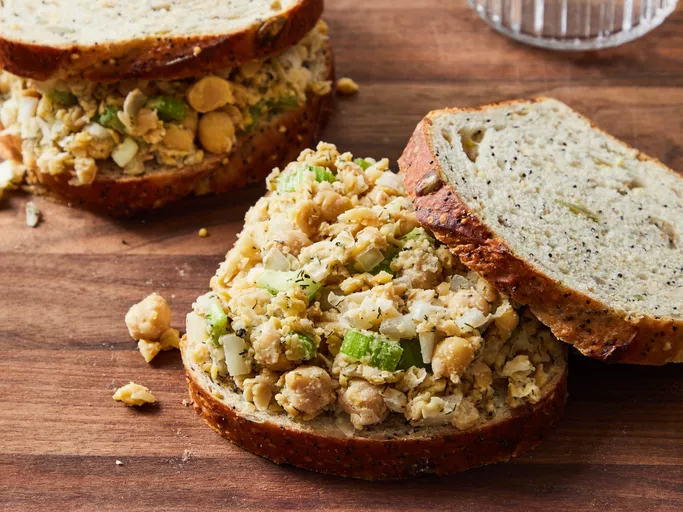

Vegetarian Chickpea Sandwich Filling

Description
Spread this chickpea sandwich filling on crusty whole grain
rolls or pita bread and serve with lettuce and tomato.
Ingredients
- 1 (15.5 ounce) can chickpeas, drained and rinsed
- 1 stalk celery, chopped
- ½ onion, chopped
- 1 tablespoon mayonnaise, or to taste
- 1 tablespoon lemon juice
- 1 teaspoon dried dill weed
- salt and pepper to taste
Steps
- Gather all ingredients
- Mash chickpeas in a medium bowl with a fork.
- Mix in celery, onion, mayonnaise, lemon juice, and
dill until well combined. Season with salt and pepper.
- Serve on bread and enjoy!